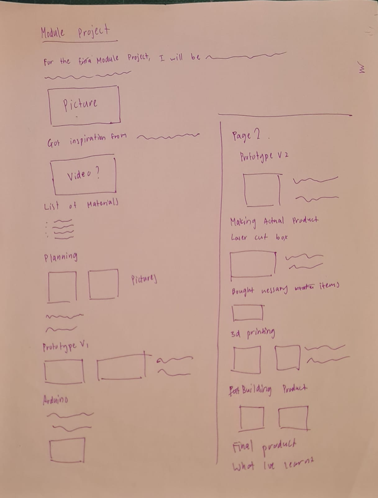
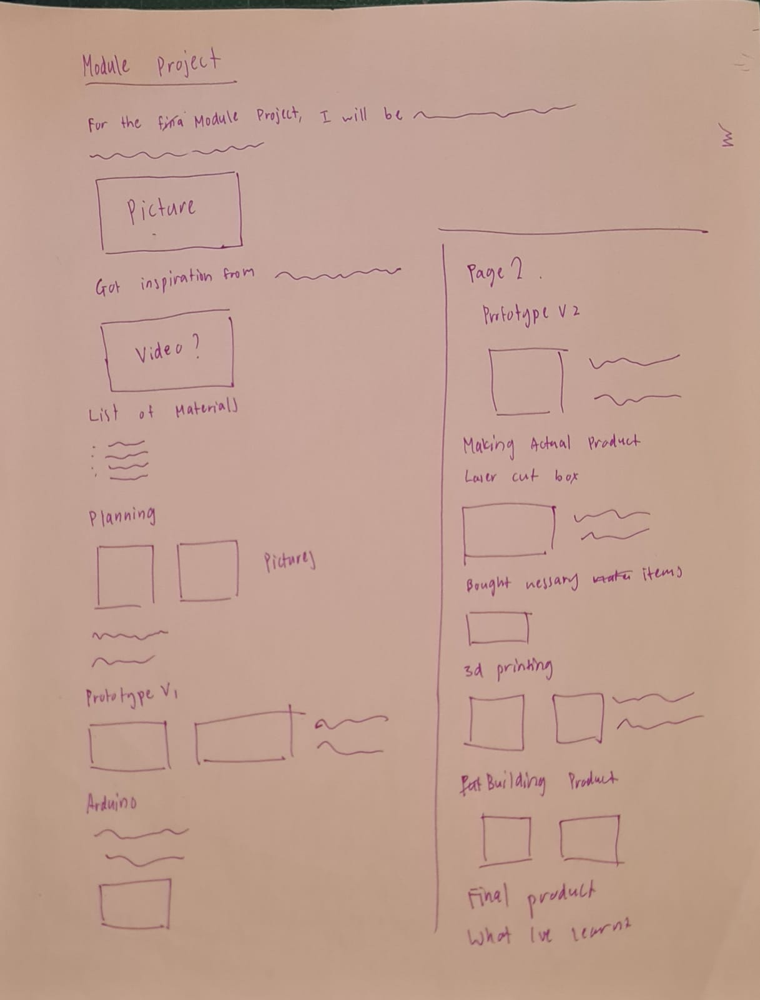
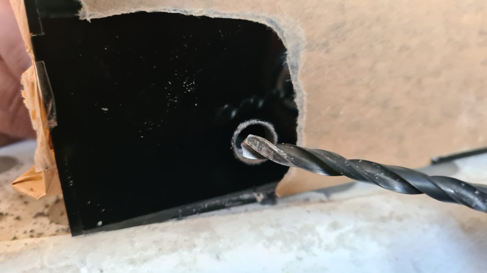
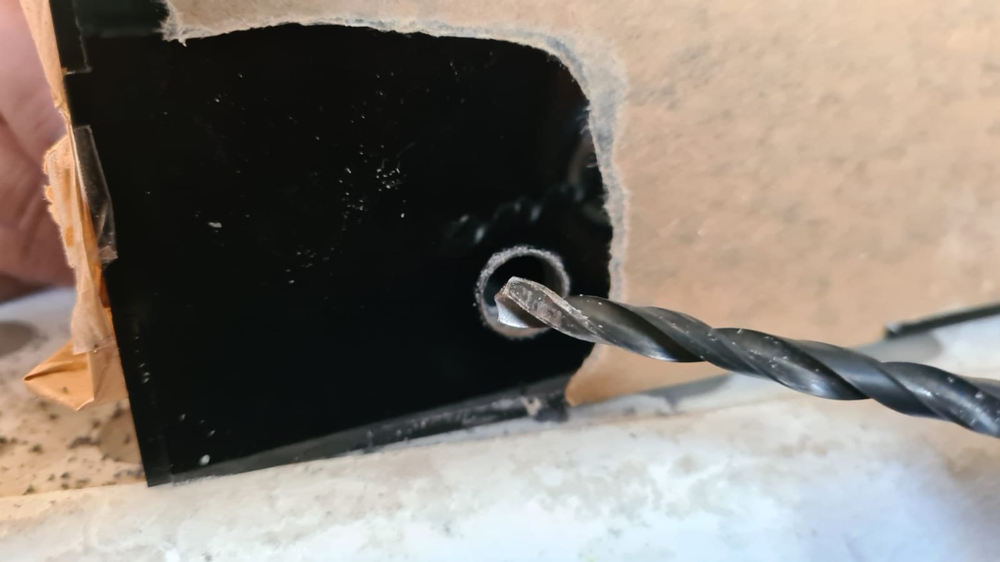

Module Project: The Most Useless Machine Ever
For the final module project, I have decide to make The Most Useless Machine Ever. I came across this idea while watching Youtube. However, to make it a little more challenging, I will be implementing a lcd I2c screen to display messages.
Final Product
Here you can see a hero shot of my project and it working in action. The documentation of the project will be below this section. There will also be a link below to my 1 minute video for the module project. (Click here to download presentation file) (Click here to go to Youtube Video on Module Project){kind=link}
Planning
I drew out a couple of pages worth of ideas that I had for this project. Coming from a DnT background, it was nice to be able to this once again.
 

Materials/Electronics needed:
- Toggle switch
- Mini breadboard
- Battery case
- 4 AAA batteries
- Mounting tape
Prototyping
I decided to build a prototype from used cardboard boxes. It was actually a fantastic idea because I was able to get my dimensions right finalise them using this prototype. I managed to create the box and a few arms for the servo by planning them out on a few pieces of paper. I got the dimensions from just eye balling actually. Then I slowly changed them to suit the components.
 I did the same for the my arm part. It took me quite a number of tries to get the right design. It could not be too long as the leaverage would make opening the lid close to impossible.
I did the same for the my arm part. It took me quite a number of tries to get the right design. It could not be too long as the leaverage would make opening the lid close to impossible.
Arduino Uno
I tried building the cicuit and trying it out while doing the prototype. It turned out ok. However, I had a couple problem especially on the arduino codes. I had a hard time figuring out and putting together the codes due to my lack of coding experience. But I managed to do it thankfully after asking my lectures and watching tutorials. So here is my version 1 of the coding. It was programmed to turn the servo while also print out "PLS TURN OFF MACHINE". I also had to learn how to solder which was an insteresting experience for me. My dad and I are into rc stuff from drones to planes to even drift cars. So we had a mini soldering iron at home. After a couple of tries, I actually managed to solder the wires for my switch together. I also had to do this to connect the battery box to the board. After tinkering about with the coding a little more, I came out with this. It is a little more complicated now. So as the arm comes out to switch the toggle switch, it will print "PLS TRY AGAIN" before returning back to the original print. I also changed the time delay of the servo as well as the lcd to make it more interesting. Below, you will be able to see the final circuit, the circuit working as well as the arduino code. (Click to download code file)
(Click to download code file)
3D Printing
This is probably my favourite part of this project. I was very excited and couldnt wait to get my hands on the 3d printer. I ended up printing quite a number of parts. I used Fusion360 to make the 3d models before slicing them in cura. The parts are:- Hinge
- Servo Holder
- Name plate
- L-support
- On-off plate
- Arduino holder
- Arm
- Lcd top plate
- Lcd bottom plate

 Here are the laser cut parts.Had to do a little trimming and sanding here and there but overall, they turned out great. If you look closely however, I printed 2 different arms. The first one was too big so I had to design something smaller.
Here are the laser cut parts.Had to do a little trimming and sanding here and there but overall, they turned out great. If you look closely however, I printed 2 different arms. The first one was too big so I had to design something smaller.

Laser cutting
So the main body was to be made via laser cutting. I designed the parts in fusion360 before sketching them in Autocad. I did so to ensure that the parts were going to fit each other perfectly.

Assembling
To assemble the box, I made use of hot glue. The proper method is by clorofoam however I was not able to get my hands on them so I got the next best method, hot glue. It was very tedius and I even managed to drip hot glue on my pants which was terrifiying. I started by roughing up the surfaces that will be connected via the finger connectors. This took a awhile as I was trying to be careful as possible so as to not scuff up the other surfaces. After cleaning the suface of the dust residue, I applied the hot glue onto the surfaces before clamping them thightly. This was very crucial to ensure that the box will stay together. I continued to do this for the bottom and side acrylic pieces, not forgeting to cut off the excess glue. After doing so, I then roughed up the contact surfaces for both the l-supports and the acrylic before hot glueing them. This definately helped out with the overall stability. However, to me the next step was definately the biggest factor in the strength of the box. I basically decided to apply the hot glue along where the acrylic connects with each other. I got this inspiration from watching welding videos and it turned out great. The box was definately way sturdier. So now onto the hinge and servo. I used mounting tape to mount these onto the acrylic surface. These had to be done carefully because if the placement off even just slightly the mechanisms would not work. For the arduino case and the battery pack I used velcro tape for the ease of removal incase I need to make changes. This turned out to be crucial as I kept taking them out to fit them better inside the box. For the arm, I tried multiple ways from mounting tape to zip ties. However, I found out that the most reliable option was using hot glue. I also found out that the backboard comes with double-sided tape already so I just used it instead of the mounting tape. As for the lcd, I used a thin double sided tape to tape the part that I had 3d printed onto the lcd board. I repeated this to stick the top of the lcd under the cut-out that has been made. This process made sure that the lcd would not stick out and stay flush with the surface of the acrylic panel. However, I was still not too happy with how it turned out. There was a thin gap between the lcd and the cut-out. So I designed and printed a little lip that would cover the gap. This also gave me the chance to stick the on-off plate onto the switch.
Although the circuit is connected to batteries placed inside, I decided to drill a hole about 10mm big on the right side of the machine. This was incase my machine was not still not able to operate without being plugged into an external power source. I used the measurements from the uno power input to ensure that the hole lined up perfectly.

So now that every thing was mostly mounted, it was time to put the Arduino baord and everything else inside. It was important that the wires cleared the arm so that they would not get caught and be yanked out. It was definately a pain in the butt to ensure that everything fits but I managed to do it. A little cramped but it turned out pretty good.
Last but not least it was time to add the finishing touches. I had printed two plates with the project name on them. This was definately a great touch to the machine. This also meant that it was time to peel off the protective sticker from the acrylic.
However, I was still not too happy with how it turned out. There was a thin gap between the lcd and the cut-out. So I designed and printed a little lip that would cover the gap. This also gave me the chance to stick the on-off plate onto the switch.
Although the circuit is connected to batteries placed inside, I decided to drill a hole about 10mm big on the right side of the machine. This was incase my machine was not still not able to operate without being plugged into an external power source. I used the measurements from the uno power input to ensure that the hole lined up perfectly.

So now that every thing was mostly mounted, it was time to put the Arduino baord and everything else inside. It was important that the wires cleared the arm so that they would not get caught and be yanked out. It was definately a pain in the butt to ensure that everything fits but I managed to do it. A little cramped but it turned out pretty good.
Last but not least it was time to add the finishing touches. I had printed two plates with the project name on them. This was definately a great touch to the machine. This also meant that it was time to peel off the protective sticker from the acrylic.